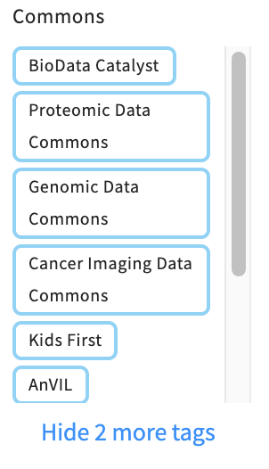
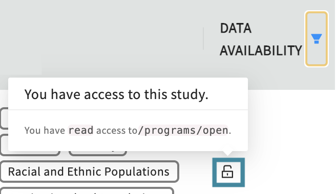

Data Management and Repositories
The BRH securely exposes a) study metadata and b) data files stored on FAIR repositories and Data Resources/Data Commons to provide an easy way to connect different repositories on one single location.
Users can explore study metdata and available data files by visiting the Discovery Page.
a) Study Metadata
Study metadata from different Data Commons can be filtered and selected on the Discovery Pages in the tags section (top panel):
The Discovery Page will automatically update to display the filtered study metadata. Click on any study entry to see all available study-level metadata.
a) Data Files
Data files are currently shared from the following resources/Data Commons. More Commons will be added in the future.
Users can find the available data files in two ways:
- Select "Data Availability"-"Available" in the right section of the navigation bar on the Discovery Page as shown here.
-
Select the desired Data Resources mentioned above by clicking on the respective
tags. Open studies are marked with the symbol of an open lock.
